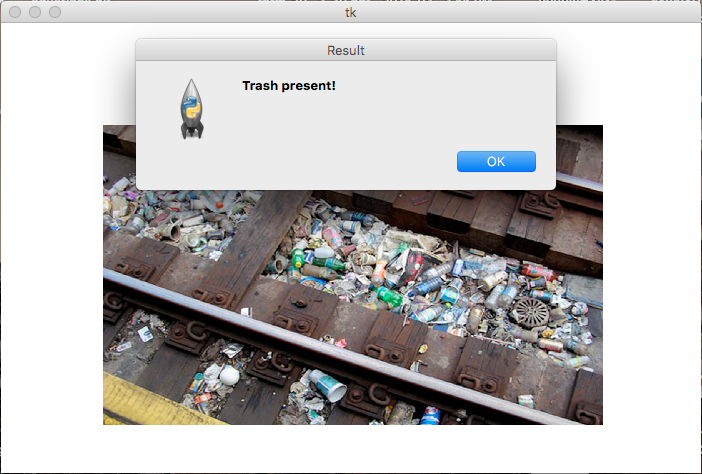

Trash Detect
The Trash Detect application uses IBM Watson and Clarifai computer vision APIs to detect trash in a image and the computer vision analysis detects garbage near the train tracks, it alerts the user with a message prompt that trash is present.
